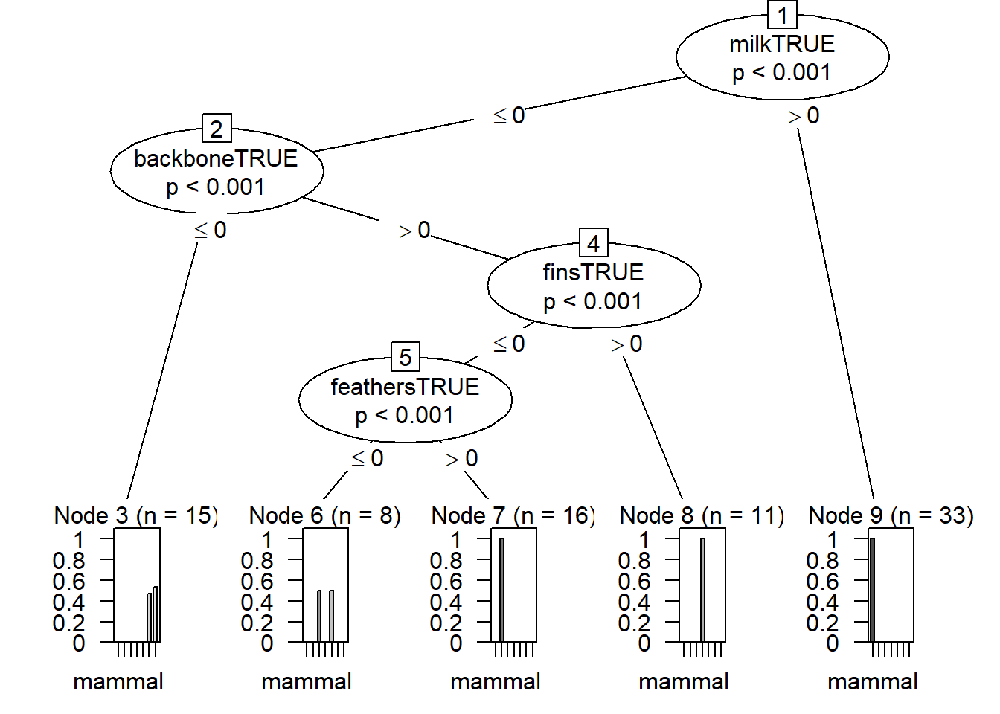
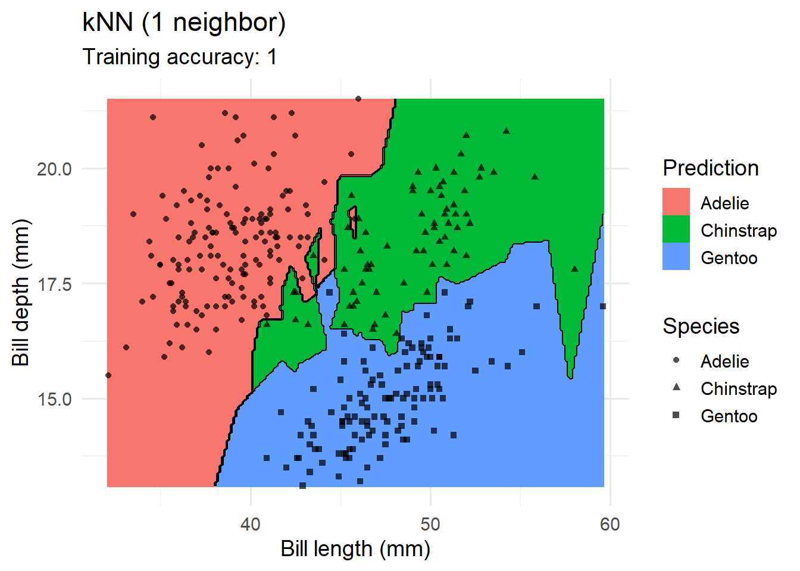
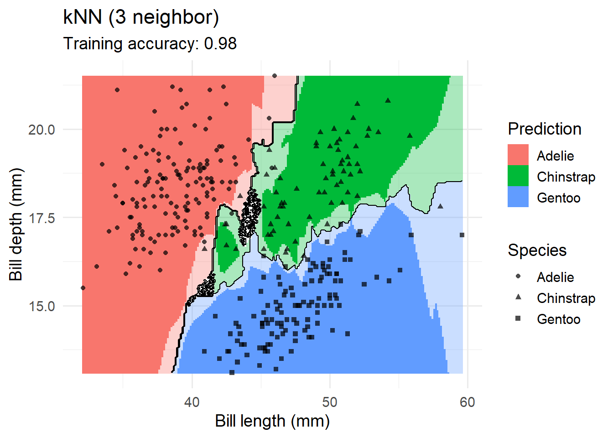
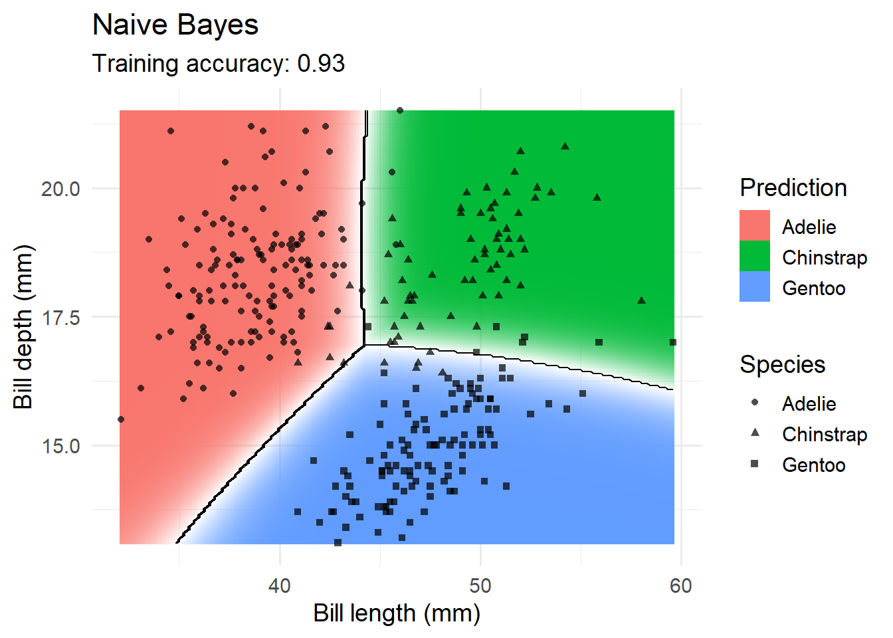
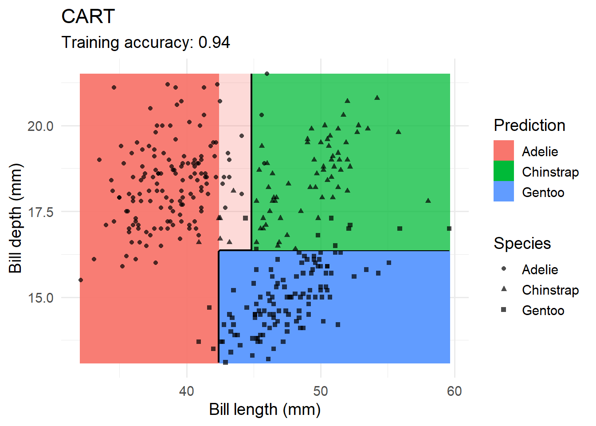

########################################################
#
# Exercise 3 - Part I:
#
# Classification: Basic Concepts and Techniques
#
########################################################
if(!require(pacman))
install.packages("pacman")Loading required package: pacmanpacman::p_load(tidyverse, rpart, rpart.plot, caret,
lattice, FSelector, sampling, pROC, mlbench)
### Dataset we'll be working with
data(Zoo, package="mlbench")
head(Zoo) hair feathers eggs milk airborne aquatic predator toothed backbone
aardvark TRUE FALSE FALSE TRUE FALSE FALSE TRUE TRUE TRUE
antelope TRUE FALSE FALSE TRUE FALSE FALSE FALSE TRUE TRUE
bass FALSE FALSE TRUE FALSE FALSE TRUE TRUE TRUE TRUE
bear TRUE FALSE FALSE TRUE FALSE FALSE TRUE TRUE TRUE
boar TRUE FALSE FALSE TRUE FALSE FALSE TRUE TRUE TRUE
buffalo TRUE FALSE FALSE TRUE FALSE FALSE FALSE TRUE TRUE
breathes venomous fins legs tail domestic catsize type
aardvark TRUE FALSE FALSE 4 FALSE FALSE TRUE mammal
antelope TRUE FALSE FALSE 4 TRUE FALSE TRUE mammal
bass FALSE FALSE TRUE 0 TRUE FALSE FALSE fish
bear TRUE FALSE FALSE 4 FALSE FALSE TRUE mammal
boar TRUE FALSE FALSE 4 TRUE FALSE TRUE mammal
buffalo TRUE FALSE FALSE 4 TRUE FALSE TRUE mammallibrary(tidyverse)
as_tibble(Zoo, rownames = "animal")# A tibble: 101 × 18
animal hair feathers eggs milk airborne aquatic predator toothed backbone
<chr> <lgl> <lgl> <lgl> <lgl> <lgl> <lgl> <lgl> <lgl> <lgl>
1 aardva… TRUE FALSE FALSE TRUE FALSE FALSE TRUE TRUE TRUE
2 antelo… TRUE FALSE FALSE TRUE FALSE FALSE FALSE TRUE TRUE
3 bass FALSE FALSE TRUE FALSE FALSE TRUE TRUE TRUE TRUE
4 bear TRUE FALSE FALSE TRUE FALSE FALSE TRUE TRUE TRUE
5 boar TRUE FALSE FALSE TRUE FALSE FALSE TRUE TRUE TRUE
6 buffalo TRUE FALSE FALSE TRUE FALSE FALSE FALSE TRUE TRUE
7 calf TRUE FALSE FALSE TRUE FALSE FALSE FALSE TRUE TRUE
8 carp FALSE FALSE TRUE FALSE FALSE TRUE FALSE TRUE TRUE
9 catfish FALSE FALSE TRUE FALSE FALSE TRUE TRUE TRUE TRUE
10 cavy TRUE FALSE FALSE TRUE FALSE FALSE FALSE TRUE TRUE
# ℹ 91 more rows
# ℹ 8 more variables: breathes <lgl>, venomous <lgl>, fins <lgl>, legs <int>,
# tail <lgl>, domestic <lgl>, catsize <lgl>, type <fct>Zoo <- Zoo |>
mutate(across(where(is.logical), factor, levels = c(TRUE, FALSE))) |>
mutate(across(where(is.character), factor))Warning: There was 1 warning in `mutate()`.
ℹ In argument: `across(where(is.logical), factor, levels = c(TRUE, FALSE))`.
Caused by warning:
! The `...` argument of `across()` is deprecated as of dplyr 1.1.0.
Supply arguments directly to `.fns` through an anonymous function instead.
# Previously
across(a:b, mean, na.rm = TRUE)
# Now
across(a:b, \(x) mean(x, na.rm = TRUE))summary(Zoo) hair feathers eggs milk airborne aquatic predator
TRUE :43 TRUE :20 TRUE :59 TRUE :41 TRUE :24 TRUE :36 TRUE :56
FALSE:58 FALSE:81 FALSE:42 FALSE:60 FALSE:77 FALSE:65 FALSE:45
toothed backbone breathes venomous fins legs
TRUE :61 TRUE :83 TRUE :80 TRUE : 8 TRUE :17 Min. :0.000
FALSE:40 FALSE:18 FALSE:21 FALSE:93 FALSE:84 1st Qu.:2.000
Median :4.000
Mean :2.842
3rd Qu.:4.000
Max. :8.000
tail domestic catsize type
TRUE :75 TRUE :13 TRUE :44 mammal :41
FALSE:26 FALSE:88 FALSE:57 bird :20
reptile : 5
fish :13
amphibian : 4
insect : 8
mollusc.et.al:10 ### Decision Trees
library(rpart)
### Create Tree With Default Settings (uses pre-pruning)
tree_default <- Zoo |>
rpart(type ~ ., data = _)
tree_defaultn= 101
node), split, n, loss, yval, (yprob)
* denotes terminal node
1) root 101 60 mammal (0.41 0.2 0.05 0.13 0.04 0.079 0.099)
2) milk=TRUE 41 0 mammal (1 0 0 0 0 0 0) *
3) milk=FALSE 60 40 bird (0 0.33 0.083 0.22 0.067 0.13 0.17)
6) feathers=TRUE 20 0 bird (0 1 0 0 0 0 0) *
7) feathers=FALSE 40 27 fish (0 0 0.12 0.32 0.1 0.2 0.25)
14) fins=TRUE 13 0 fish (0 0 0 1 0 0 0) *
15) fins=FALSE 27 17 mollusc.et.al (0 0 0.19 0 0.15 0.3 0.37)
30) backbone=TRUE 9 4 reptile (0 0 0.56 0 0.44 0 0) *
31) backbone=FALSE 18 8 mollusc.et.al (0 0 0 0 0 0.44 0.56) *library(rpart.plot)
rpart.plot(tree_default, extra = 2)
### Create a Full Tree (rpart.plot will create a plot)
tree_full <- Zoo |>
rpart(type ~ . , data = _,
control = rpart.control(minsplit = 2, cp = 0))
rpart.plot(tree_full, extra = 2,
roundint=FALSE,
box.palette = list("Gy", "Gn", "Bu", "Bn",
"Or", "Rd", "Pu")) # specify 7 colorstree_full # This will show the tree in terminal format.n= 101
node), split, n, loss, yval, (yprob)
* denotes terminal node
1) root 101 60 mammal (0.41 0.2 0.05 0.13 0.04 0.079 0.099)
2) milk=TRUE 41 0 mammal (1 0 0 0 0 0 0) *
3) milk=FALSE 60 40 bird (0 0.33 0.083 0.22 0.067 0.13 0.17)
6) feathers=TRUE 20 0 bird (0 1 0 0 0 0 0) *
7) feathers=FALSE 40 27 fish (0 0 0.12 0.32 0.1 0.2 0.25)
14) fins=TRUE 13 0 fish (0 0 0 1 0 0 0) *
15) fins=FALSE 27 17 mollusc.et.al (0 0 0.19 0 0.15 0.3 0.37)
30) backbone=TRUE 9 4 reptile (0 0 0.56 0 0.44 0 0)
60) aquatic=FALSE 4 0 reptile (0 0 1 0 0 0 0) *
61) aquatic=TRUE 5 1 amphibian (0 0 0.2 0 0.8 0 0)
122) eggs=FALSE 1 0 reptile (0 0 1 0 0 0 0) *
123) eggs=TRUE 4 0 amphibian (0 0 0 0 1 0 0) *
31) backbone=FALSE 18 8 mollusc.et.al (0 0 0 0 0 0.44 0.56)
62) airborne=TRUE 6 0 insect (0 0 0 0 0 1 0) *
63) airborne=FALSE 12 2 mollusc.et.al (0 0 0 0 0 0.17 0.83)
126) predator=FALSE 4 2 insect (0 0 0 0 0 0.5 0.5)
252) legs>=3 2 0 insect (0 0 0 0 0 1 0) *
253) legs< 3 2 0 mollusc.et.al (0 0 0 0 0 0 1) *
127) predator=TRUE 8 0 mollusc.et.al (0 0 0 0 0 0 1) *predict(tree_default, Zoo) |> head () mammal bird reptile fish amphibian insect mollusc.et.al
aardvark 1 0 0 0 0 0 0
antelope 1 0 0 0 0 0 0
bass 0 0 0 1 0 0 0
bear 1 0 0 0 0 0 0
boar 1 0 0 0 0 0 0
buffalo 1 0 0 0 0 0 0pred <- predict(tree_default, Zoo, type="class")
head(pred)aardvark antelope bass bear boar buffalo
mammal mammal fish mammal mammal mammal
Levels: mammal bird reptile fish amphibian insect mollusc.et.alconfusion_table <- with(Zoo, table(type, pred))
confusion_table pred
type mammal bird reptile fish amphibian insect mollusc.et.al
mammal 41 0 0 0 0 0 0
bird 0 20 0 0 0 0 0
reptile 0 0 5 0 0 0 0
fish 0 0 0 13 0 0 0
amphibian 0 0 4 0 0 0 0
insect 0 0 0 0 0 0 8
mollusc.et.al 0 0 0 0 0 0 10correct <- confusion_table |> diag() |> sum()
correct[1] 89error <- confusion_table |> sum() - correct
error[1] 12accuracy <- correct / (correct + error)
accuracy[1] 0.8811881accuracy <- function(truth, prediction) {
tbl <- table(truth, prediction)
sum(diag(tbl))/sum(tbl)
}
accuracy(Zoo |> pull(type), pred)[1] 0.8811881accuracy(Zoo |> pull(type),
predict(tree_full, Zoo, type = "class"))[1] 1library(caret)
confusionMatrix(data = pred,
reference = Zoo |> pull(type))Confusion Matrix and Statistics
Reference
Prediction mammal bird reptile fish amphibian insect mollusc.et.al
mammal 41 0 0 0 0 0 0
bird 0 20 0 0 0 0 0
reptile 0 0 5 0 4 0 0
fish 0 0 0 13 0 0 0
amphibian 0 0 0 0 0 0 0
insect 0 0 0 0 0 0 0
mollusc.et.al 0 0 0 0 0 8 10
Overall Statistics
Accuracy : 0.8812
95% CI : (0.8017, 0.9371)
No Information Rate : 0.4059
P-Value [Acc > NIR] : < 2.2e-16
Kappa : 0.8431
Mcnemar's Test P-Value : NA
Statistics by Class:
Class: mammal Class: bird Class: reptile Class: fish
Sensitivity 1.0000 1.000 1.00000 1.0000
Specificity 1.0000 1.000 0.95833 1.0000
Pos Pred Value 1.0000 1.000 0.55556 1.0000
Neg Pred Value 1.0000 1.000 1.00000 1.0000
Prevalence 0.4059 0.198 0.04950 0.1287
Detection Rate 0.4059 0.198 0.04950 0.1287
Detection Prevalence 0.4059 0.198 0.08911 0.1287
Balanced Accuracy 1.0000 1.000 0.97917 1.0000
Class: amphibian Class: insect Class: mollusc.et.al
Sensitivity 0.0000 0.00000 1.00000
Specificity 1.0000 1.00000 0.91209
Pos Pred Value NaN NaN 0.55556
Neg Pred Value 0.9604 0.92079 1.00000
Prevalence 0.0396 0.07921 0.09901
Detection Rate 0.0000 0.00000 0.09901
Detection Prevalence 0.0000 0.00000 0.17822
Balanced Accuracy 0.5000 0.50000 0.95604### Make Predictions for New Data
###### Make up my own animal: A lion with feathered wings
my_animal <- tibble(hair = TRUE, feathers = TRUE, eggs = FALSE,
milk = TRUE, airborne = TRUE, aquatic = FALSE, predator = TRUE,
toothed = TRUE, backbone = TRUE, breathes = TRUE, venomous = FALSE,
fins = FALSE, legs = 4, tail = TRUE, domestic = FALSE,
catsize = FALSE, type = NA)
my_animal <- my_animal |>
mutate(across(where(is.logical), factor, levels = c(TRUE, FALSE)))
my_animal# A tibble: 1 × 17
hair feathers eggs milk airborne aquatic predator toothed backbone breathes
<fct> <fct> <fct> <fct> <fct> <fct> <fct> <fct> <fct> <fct>
1 TRUE TRUE FALSE TRUE TRUE FALSE TRUE TRUE TRUE TRUE
# ℹ 7 more variables: venomous <fct>, fins <fct>, legs <dbl>, tail <fct>,
# domestic <fct>, catsize <fct>, type <fct>predict(tree_default , my_animal, type = "class") 1
mammal
Levels: mammal bird reptile fish amphibian insect mollusc.et.al### Model Evaluation with Caret
library(caret)
## Windows backend
library(doParallel)Loading required package: foreach
Attaching package: 'foreach'The following objects are masked from 'package:purrr':
accumulate, whenLoading required package: iteratorsLoading required package: parallelcl <- makeCluster(4, type="SOCK")
registerDoParallel(cl)
set.seed(2000)
### Hold out Test Data
inTrain <- createDataPartition(y = Zoo$type, p = .8, list = FALSE)
Zoo_train <- Zoo |> slice(inTrain)Warning: Slicing with a 1-column matrix was deprecated in dplyr 1.1.0.Zoo_test <- Zoo |> slice(-inTrain)
### Learn a Model and Tune Hyperparameters on the Training Data
fit <- Zoo_train |>
train(type ~ .,
data = _ ,
method = "rpart",
control = rpart.control(minsplit = 2),
trControl = trainControl(method = "cv", number = 10),
tuneLength = 5)
fitCART
83 samples
16 predictors
7 classes: 'mammal', 'bird', 'reptile', 'fish', 'amphibian', 'insect', 'mollusc.et.al'
No pre-processing
Resampling: Cross-Validated (10 fold)
Summary of sample sizes: 77, 74, 75, 73, 74, 76, ...
Resampling results across tuning parameters:
cp Accuracy Kappa
0.00 0.9384921 0.9188571
0.08 0.8973810 0.8681837
0.16 0.7447619 0.6637060
0.22 0.6663095 0.5540490
0.32 0.4735317 0.1900043
Accuracy was used to select the optimal model using the largest value.
The final value used for the model was cp = 0.rpart.plot(fit$finalModel, extra = 2,
box.palette = list("Gy", "Gn", "Bu", "Bn", "Or", "Rd", "Pu"))varImp(fit)rpart variable importance
Overall
toothedFALSE 100.000
feathersFALSE 69.814
backboneFALSE 63.084
milkFALSE 55.555
eggsFALSE 53.614
hairFALSE 50.518
finsFALSE 46.984
tailFALSE 28.447
breathesFALSE 28.128
airborneFALSE 26.272
legs 25.859
aquaticFALSE 5.960
predatorFALSE 2.349
venomousFALSE 1.387
catsizeFALSE 0.000
domesticFALSE 0.000imp <- varImp(fit, compete = FALSE)
imprpart variable importance
Overall
milkFALSE 100.000
feathersFALSE 55.694
finsFALSE 39.453
toothedFALSE 22.956
airborneFALSE 22.478
aquaticFALSE 9.987
eggsFALSE 6.658
legs 5.549
predatorFALSE 1.850
domesticFALSE 0.000
breathesFALSE 0.000
catsizeFALSE 0.000
tailFALSE 0.000
hairFALSE 0.000
backboneFALSE 0.000
venomousFALSE 0.000ggplot(imp)
### The above code can render. ###
### Testing: Confusion Matrix and Confidence Interval for Accuracy ###
pred <- predict(fit, newdata = Zoo_test) # Now we're brining in TEST DATA.
pred [1] mammal mammal mollusc.et.al insect mammal
[6] mammal mammal bird mammal mammal
[11] bird fish fish mammal mollusc.et.al
[16] bird insect bird
Levels: mammal bird reptile fish amphibian insect mollusc.et.alconfusionMatrix(data = pred,
ref = Zoo_test |> pull(type))Confusion Matrix and Statistics
Reference
Prediction mammal bird reptile fish amphibian insect mollusc.et.al
mammal 8 0 0 0 0 0 0
bird 0 4 0 0 0 0 0
reptile 0 0 0 0 0 0 0
fish 0 0 0 2 0 0 0
amphibian 0 0 0 0 0 0 0
insect 0 0 1 0 0 1 0
mollusc.et.al 0 0 0 0 0 0 2
Overall Statistics
Accuracy : 0.9444
95% CI : (0.7271, 0.9986)
No Information Rate : 0.4444
P-Value [Acc > NIR] : 1.076e-05
Kappa : 0.9231
Mcnemar's Test P-Value : NA
Statistics by Class:
Class: mammal Class: bird Class: reptile Class: fish
Sensitivity 1.0000 1.0000 0.00000 1.0000
Specificity 1.0000 1.0000 1.00000 1.0000
Pos Pred Value 1.0000 1.0000 NaN 1.0000
Neg Pred Value 1.0000 1.0000 0.94444 1.0000
Prevalence 0.4444 0.2222 0.05556 0.1111
Detection Rate 0.4444 0.2222 0.00000 0.1111
Detection Prevalence 0.4444 0.2222 0.00000 0.1111
Balanced Accuracy 1.0000 1.0000 0.50000 1.0000
Class: amphibian Class: insect Class: mollusc.et.al
Sensitivity NA 1.00000 1.0000
Specificity 1 0.94118 1.0000
Pos Pred Value NA 0.50000 1.0000
Neg Pred Value NA 1.00000 1.0000
Prevalence 0 0.05556 0.1111
Detection Rate 0 0.05556 0.1111
Detection Prevalence 0 0.11111 0.1111
Balanced Accuracy NA 0.97059 1.0000### Model Comparison ###
train_index <- createFolds(Zoo_train$type, k = 10)
rpartFit <- Zoo_train |>
train(type ~ .,
data = _,
method = "rpart",
tuneLength = 10,
trControl = trainControl(method = "cv", indexOut = train_index)
)
knnFit <- Zoo_train |>
train(type ~ .,
data = _,
method = "knn",
preProcess = "scale",
tuneLength = 10,
trControl = trainControl(method = "cv", indexOut = train_index)
)
resamps <- resamples(list(
CART = rpartFit,
kNearestNeighbors = knnFit
))
summary(resamps)
Call:
summary.resamples(object = resamps)
Models: CART, kNearestNeighbors
Number of resamples: 10
Accuracy
Min. 1st Qu. Median Mean 3rd Qu. Max. NA's
CART 0.6666667 0.8750000 0.8888889 0.8722222 0.8888889 1 0
kNearestNeighbors 0.8750000 0.9166667 1.0000000 0.9652778 1.0000000 1 0
Kappa
Min. 1st Qu. Median Mean 3rd Qu. Max. NA's
CART 0.5909091 0.8333333 0.8474576 0.8341866 0.8570312 1 0
kNearestNeighbors 0.8333333 0.8977273 1.0000000 0.9546970 1.0000000 1 0library(lattice)
bwplot(resamps, layout = c(3, 1))
difs <- diff(resamps)
difs
Call:
diff.resamples(x = resamps)
Models: CART, kNearestNeighbors
Metrics: Accuracy, Kappa
Number of differences: 1
p-value adjustment: bonferroni summary(difs)
Call:
summary.diff.resamples(object = difs)
p-value adjustment: bonferroni
Upper diagonal: estimates of the difference
Lower diagonal: p-value for H0: difference = 0
Accuracy
CART kNearestNeighbors
CART -0.09306
kNearestNeighbors 0.01151
Kappa
CART kNearestNeighbors
CART -0.1205
kNearestNeighbors 0.0104 ### Feature Selection and Feature Preparation ###
library(FSelector)
### The above code can render: Test 2. ###
### Univariate Feature Importance Score ###
weights <- Zoo_train |>
chi.squared(type ~ ., data = _) |>
as_tibble(rownames = "feature") |>
arrange(desc(attr_importance))
weights# A tibble: 16 × 2
feature attr_importance
<chr> <dbl>
1 feathers 1
2 milk 1
3 backbone 1
4 toothed 0.975
5 eggs 0.933
6 hair 0.907
7 breathes 0.898
8 airborne 0.848
9 fins 0.845
10 legs 0.828
11 tail 0.779
12 catsize 0.664
13 aquatic 0.655
14 venomous 0.475
15 predator 0.385
16 domestic 0.231ggplot(weights,
aes(x = attr_importance, y = reorder(feature, attr_importance))) +
geom_bar(stat = "identity") +
xlab("Importance score") +
ylab("Feature")subset <- cutoff.k(weights |>
column_to_rownames("feature"), 5)
subset[1] "feathers" "milk" "backbone" "toothed" "eggs" f <- as.simple.formula(subset, "type")
ftype ~ feathers + milk + backbone + toothed + eggs
<environment: 0x000001d0bc6e16c8>m <- Zoo_train |> rpart(f, data = _)
rpart.plot(m, extra = 2, roundint = FALSE)
Zoo_train |>
gain.ratio(type ~ ., data = _) |>
as_tibble(rownames = "feature") |>
arrange(desc(attr_importance))# A tibble: 16 × 2
feature attr_importance
<chr> <dbl>
1 milk 1
2 backbone 1
3 feathers 1
4 toothed 0.919
5 eggs 0.827
6 breathes 0.821
7 hair 0.782
8 fins 0.689
9 legs 0.682
10 airborne 0.671
11 tail 0.573
12 aquatic 0.391
13 catsize 0.383
14 venomous 0.351
15 predator 0.125
16 domestic 0.0975### Feature Subset Selection ###
Zoo_train |>
cfs(type ~ ., data = _) [1] "hair" "feathers" "eggs" "milk" "toothed" "backbone"
[7] "breathes" "fins" "legs" "tail" evaluator <- function(subset) {
model <- Zoo_train |>
train(as.simple.formula(subset, "type"),
data = _,
method = "rpart",
trControl = trainControl(method = "boot", number = 5),
tuneLength = 0)
results <- model$resample$Accuracy
cat("Trying features:", paste(subset, collapse = " + "), "\n")
m <- mean(results)
cat("Accuracy:", round(m, 2), "\n\n")
m
}
features <- Zoo_train |> colnames() |> setdiff("type")
features [1] "hair" "feathers" "eggs" "milk" "airborne" "aquatic"
[7] "predator" "toothed" "backbone" "breathes" "venomous" "fins"
[13] "legs" "tail" "domestic" "catsize" ##subset <- backward.search(features, evaluator)
##subset <- forward.search(features, evaluator)
##subset <- best.first.search(features, evaluator)
##subset <- hill.climbing.search(features, evaluator)
##subset
### The above can render: Test 3. ###
### Using Dummy Variables for Factors ###
tree_predator <- Zoo_train |>
rpart(predator ~ type, data = _)
rpart.plot(tree_predator, roundint = FALSE) #extra = 2, roundint = FALSE)
# The "extra=2" was preventing the plot from generated so I removed it.
Zoo_train_dummy <- as_tibble(class2ind(Zoo_train$type)) |>
mutate(across(everything(), as.factor)) |>
add_column(predator = Zoo_train$predator)
Zoo_train_dummy# A tibble: 83 × 8
mammal bird reptile fish amphibian insect mollusc.et.al predator
<fct> <fct> <fct> <fct> <fct> <fct> <fct> <fct>
1 1 0 0 0 0 0 0 TRUE
2 1 0 0 0 0 0 0 FALSE
3 0 0 0 1 0 0 0 TRUE
4 1 0 0 0 0 0 0 TRUE
5 1 0 0 0 0 0 0 FALSE
6 1 0 0 0 0 0 0 FALSE
7 0 0 0 1 0 0 0 FALSE
8 0 0 0 1 0 0 0 TRUE
9 1 0 0 0 0 0 0 FALSE
10 0 1 0 0 0 0 0 FALSE
# ℹ 73 more rowstree_predator <- Zoo_train_dummy |>
rpart(predator ~ .,
data = _,
control = rpart.control(minsplit = 2, cp = 0.01))
rpart.plot(tree_predator, roundint = FALSE)fit <- Zoo_train |> ### THIS IS CAUSING ISSUES.
train (type ~ predator, #(predator ~ type, ### The "type" seems to be #switched up.
data = _,
method = "rpart",
control = rpart.control(minsplit = 2),
tuneGrid = data.frame(cp = 0.01))
fitCART
83 samples
1 predictor
7 classes: 'mammal', 'bird', 'reptile', 'fish', 'amphibian', 'insect', 'mollusc.et.al'
No pre-processing
Resampling: Bootstrapped (25 reps)
Summary of sample sizes: 83, 83, 83, 83, 83, 83, ...
Resampling results:
Accuracy Kappa
0.3782772 -0.003716222
Tuning parameter 'cp' was held constant at a value of 0.01fit <- Zoo_train |>
train(type ~ .,
data = _ ,
method = "rpart",
control = rpart.control(minsplit = 2),
trControl = trainControl(method = "cv", number = 10),
tuneLength = 5)
rpart.plot(fit$finalModel, extra = 2)Warning: All boxes will be white (the box.palette argument will be ignored) because
the number of classes in the response 7 is greater than length(box.palette) 6.
To silence this warning use box.palette=0 or trace=-1.